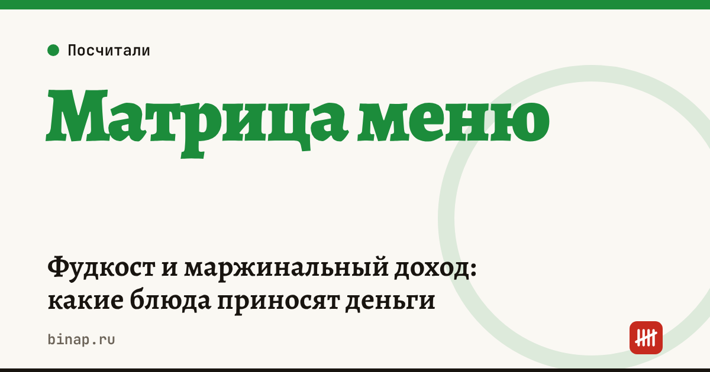

Фудкост и маржинальный доход: какие блюда приносят деньги

Низкий фудкост ещё не значит, что блюдо приносит много денег. Кафе зарабатывает на маржинальном доходе в рублях — разнице между ценой и себестоимостью продуктов — умноженном на количество продаж. Блюдо с фудкостом 35%, которое заказывают каждый день, может принести больше, чем блюдо с фудкостом 20%, которое берут раз в неделю. Ниже — как сравнить блюда и что делать с каждым.
Коротко
- Фудкост = себестоимость ÷ цена × 100%. Это доля, а не деньги.
- Маржинальный доход с порции = цена − себестоимость. Это рубли.
- Маржинальный доход блюда за месяц = маржинальный доход с порции × число продаж.
- Сравнивайте блюда по двум осям: маржинальный доход с порции и популярность.
- Четыре группы: «звёзды», «рабочие лошадки», «загадки» и «балласт» — у каждой свои действия.
Сроки, изменения и разборы для ИП и самозанятых — каждое утро в Telegram и MAX. Подпишитесь, чтобы не пропустить.
Пример: четыре блюда
Расчёт редакции, цифры условные. Данные за месяц.
| Блюдо | Цена | Себестоимость | Фудкост | Маржинальный доход с порции | Продаж | Маржинальный доход за месяц |
|---|---|---|---|---|---|---|
| Паста | 520 ₽ | 180 ₽ | 35% | 340 ₽ | 600 | 204 000 ₽ |
| Салат | 490 ₽ | 157 ₽ | 32% | 333 ₽ | 300 | 99 900 ₽ |
| Стейк | 1 500 ₽ | 600 ₽ | 40% | 900 ₽ | 80 | 72 000 ₽ |
| Суп дня | 290 ₽ | 60 ₽ | 21% | 230 ₽ | 120 | 27 600 ₽ |
У супа самый низкий фудкост — 21%, но денег он приносит меньше всех. Паста с фудкостом 35% даёт больше всего маржинального дохода за месяц.
Матрица меню
| Продают много | Продают мало | |
|---|---|---|
| Высокий маржинальный доход с порции | «Звёзды» — держать, не трогать цену | «Загадки» — продвигать: место в меню, рекомендация официанта |
| Низкий маржинальный доход с порции | «Рабочие лошадки» — аккуратно поднять цену или снизить себестоимость | «Балласт» — убрать или переделать |
Границу «много/мало» удобно брать по среднему числу продаж на блюдо, а «высокий/низкий» — по среднему маржинальному доходу с порции в меню.
Что сделать
- Выгрузите продажи по блюдам за месяц из кассы или учётной системы.
- Посчитайте себестоимость по техкартам — как это сделать, в статье себестоимость блюда и наценка.
- Посчитайте маржинальный доход за месяц по каждому блюду и разложите блюда по матрице.
- Для «загадок» поменяйте место в меню, для «балласта» — решите, убирать ли его.
Себестоимость и наценку по каждому блюду проверьте в калькуляторе фудкоста. Банкеты считают так же, но на гостя — КП на банкет.
Все материалы — в разделе «Кафе и общепиту».
Частые вопросы
Чем маржинальный доход отличается от прибыли? Маржинальный доход — цена минус переменные расходы на порцию (продукты). Прибыль остаётся после того, как из маржинального дохода всех блюд вычли аренду, зарплату и другие постоянные расходы.
Убирать ли блюдо с высоким фудкостом? Не обязательно. Если его много покупают и маржинальный доход в рублях высокий, оно приносит деньги.
Как часто пересматривать меню? Раз в квартал и при заметном изменении закупочных цен.